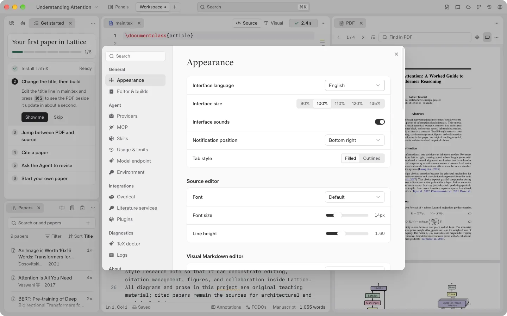
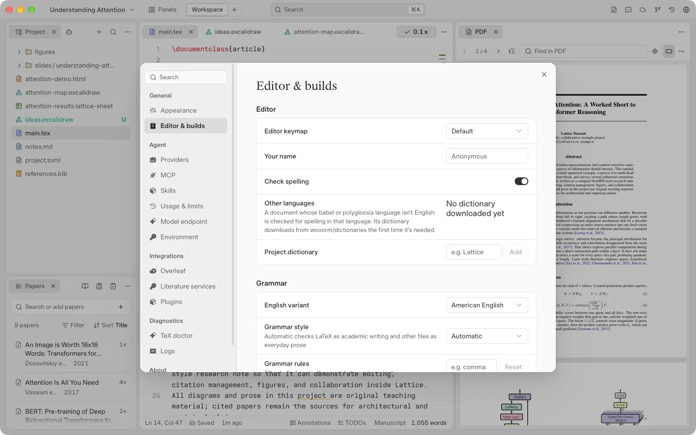
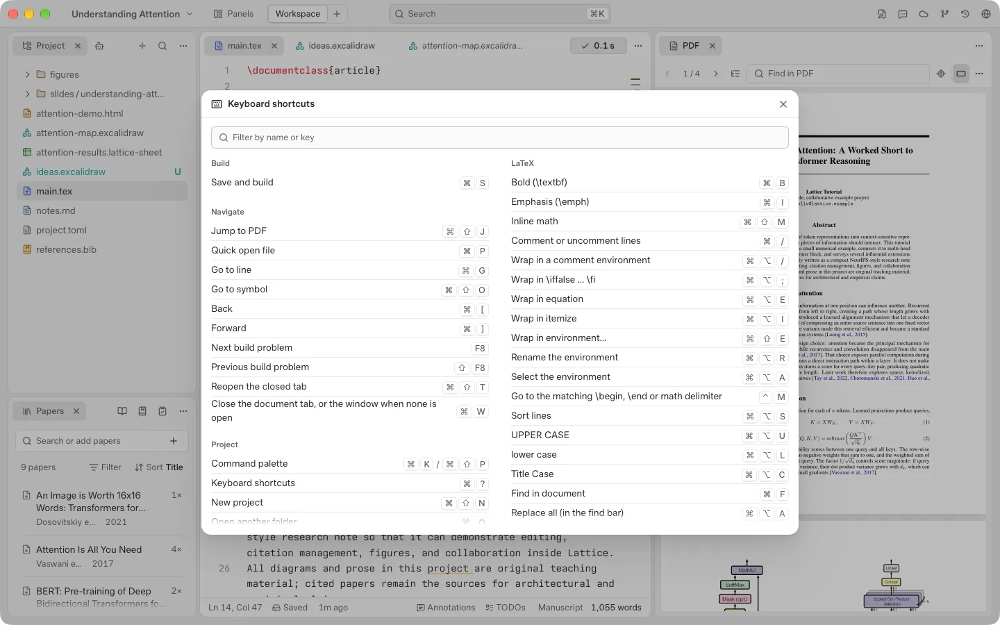

Settings and shortcuts
Settings
Open Lattice › Settings… (⌘,). The search box at the top finds any setting by name.

| Section | What's there |
|---|---|
| Appearance | Interface language (English or 简体中文), interface size, sounds, notification position, tab style, editor fonts, theme and code theme, title bar tools. |
| Editor & builds | Editor keymap (default, Vim or Emacs), your name, spelling and grammar, automatic build, auxiliary files, compile engine, shell escape, app updates. |
| Agent | Providers, MCP, Skills, Usage & limits, Model endpoint, Environment. See The Agent. |
| Integrations | Overleaf, Literature services (keys for literature search), Plugins. |
| Diagnostics | TeX doctor, Logs. |

⌘+, ⌘− and ⌘0 (or View › Bigger / Smaller / Actual Size) change the interface size for the moment.
Shortcuts
Press ⌘? (⌘⇧/) for Keyboard shortcuts, the full list, with a filter by name or key. Shortcuts follow the commands you have, so the list is always current. The ones worth learning first:
| Keys | Action |
|---|---|
⌘K |
Command palette: every command by name |
⌘S |
Save and build |
⌘P |
Quick open a file |
⌘⇧K / ⌘⇧L |
Insert citation / reference |
⌘⇧J |
Jump to PDF |
F8 / ⇧F8 |
Next / previous build problem |
⌘⇧F |
Find in project |
⌘⌥1, ⌘⌥2, ⌘⌥3 |
Project, Papers, Agent panel |
⌘1 … ⌘9 |
Switch workspace |
⌘⇧D |
Focus mode |
⌘W / ⌘⇧T |
Close tab / reopen it |

To use Vim or Emacs keys in the editor, set Settings › Editor & builds › Editor keymap.